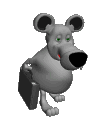
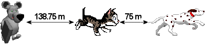

Lösung Puzzle 33: Das Wettrennen über 1000 Meter


Resultat: Der Hund hat gegenüber der Maus 213.75 Meter Vorsprung!
Begründung: Der Hund legt 1000m, die Katze 925m zurück. Da die Katze auf 1000m
gegenüber der Maus 150m Vorsprung hätte, so hat (Dreisatz!) sie auf 925m gegen
die Maus 0.15*925 m = 138.75 Meter Vorsprung.
Der Hund hat also total 75m + 138.75m = 213.75 Meter Vorsprung gegenüber der Maus.
